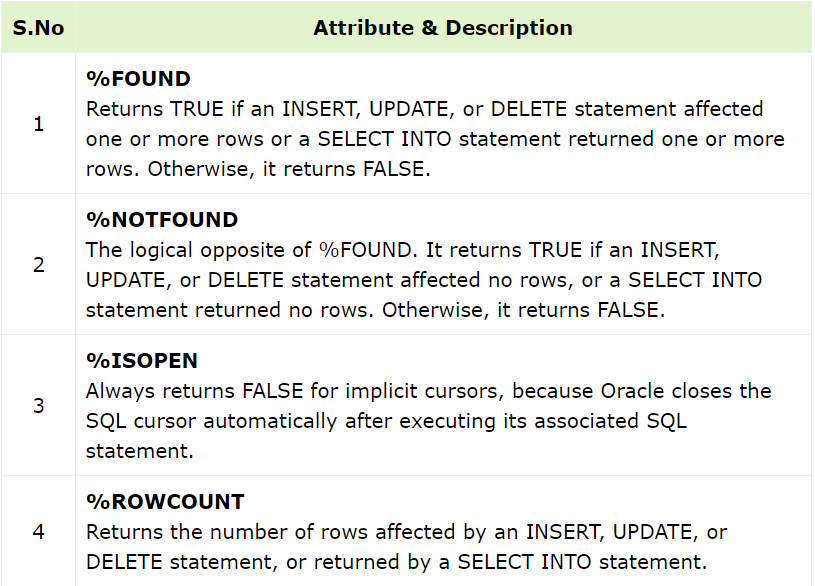

A cursor is a pointer to this context area. PL/SQL controls the context area through a cursor.
A cursor holds the rows (one or more) returned by a SQL statement. The set of rows the cursor holds is referred to as the active set.
You can name a cursor so that it could be referred to in a program to fetch and process the rows returned by the SQL statement, one at a time.
There are two types of cursors
Implicit cursors are automatically created by Oracle whenever an SQL statement is executed, when there is no explicit cursor for the statement.
Programmers cannot control the implicit cursors and the information in it.
Whenever a DML statement (INSERT, UPDATE and DELETE) is issued, an implicit cursor is associated with this statement. For INSERT operations, the cursor
holds the data that needs to be inserted. For UPDATE and DELETE operations, the cursor identifies the rows that would be affected.
In PL/SQL, you can refer to the most recent implicit cursor as the SQL cursor, which always has attributes such as %FOUND, %ISOPEN, %NOTFOUND, and %ROWCOUNT.
The SQL cursor has additional attributes, %BULK_ROWCOUNT and %BULK_EXCEPTIONS, designed for use with the FORALL statement.
The following table provides the description of the most used attributes:
We will be using the CUSTOMERS 60%table we had created and used in the previous chapters.
Select * from customers;
+----+----------+-----+-----------+----------+
| ID | NAME | AGE | ADDRESS | SALARY |
+----+----------+-----+-----------+----------+
| 1 | Ramesh | 32 | Ahmedabad | 2000.00 |
| 2 | Khilan | 25 | Delhi | 1500.00 |
| 3 | kaushik | 23 | Kota | 2000.00 |
| 4 | Chaitali | 25 | Mumbai | 6500.00 |
| 5 | Hardik | 27 | Bhopal | 8500.00 |
| 6 | Komal | 22 | MP | 4500.00 |
+----+----------+-----+-----------+----------+
The following program will update the table and increase the salary of each customer by 500 and use the SQL%ROWCOUNT attribute to determine the number of rows affected:
DECLARE
total_rows number(2);
BEGIN
UPDATE customers
SET salary = salary + 500;
IF sql%notfound THEN
dbms_output.put_line('no customers selected');
ELSIF sql%found THEN
total_rows := sql%rowcount;
dbms_output.put_line( total_rows || ' customers selected ');
END IF;
END;
/
When the above code is executed at the SQL prompt, it produces the following result:
6 customers selected
PL/SQL procedure successfully completed.
If you check the records in customers table, you will find that the rows have been updated:
Select * from customers;
+----+----------+-----+-----------+----------+
| ID | NAME | AGE | ADDRESS | SALARY |
+----+----------+-----+-----------+----------+
| 1 | Ramesh | 32 | Ahmedabad | 2500.00 |
| 2 | Khilan | 25 | Delhi | 2000.00 |
| 3 | kaushik | 23 | Kota | 2500.00 |
| 4 | Chaitali | 25 | Mumbai | 7000.00 |
| 5 | Hardik | 27 | Bhopal | 9000.00 |
| 6 | Komal | 22 | MP | 5000.00 |
+----+----------+-----+-----------+----------+
Explicit cursors are programmer-defined cursors for gaining more control over the context area. An explicit cursor should be defined in the
declaration section of the PL/SQL Block. It is created on a SELECT Statement which returns more than one row.
CURSOR cursor_name IS select_statement;Working with an explicit cursor includes the following steps:
Declaring the cursor defines the cursor with a name and the associated SELECT statement.
CURSOR c_customers IS
SELECT id, name, address FROM customers;
Opening the cursor allocates the memory for the cursor and makes it ready for fetching the rows returned by the SQL statement into it.
For example, we will open the above defined cursor as follows
OPEN c_customers;
Fetching the cursor involves accessing one row at a time. For example, we will fetch rows from the above-opened cursor as follows:
FETCH c_customers INTO c_id, c_name, c_addr;
Closing the cursor means releasing the allocated memory. For example, we will close the above-opened cursor as follows:
CLOSE c_customers;
DECLARE
c_id customers.id%type;
c_name customers.name%type;
c_addr customers.address%type;
CURSOR c_customers is
SELECT id, name, address FROM customers;
BEGIN
OPEN c_customers;
LOOP
FETCH c_customers into c_id, c_name, c_addr;
EXIT WHEN c_customers%notfound;
dbms_output.put_line(c_id || ' ' || c_name || ' ' || c_addr);
END LOOP;
CLOSE c_customers;
END;
/
When the above code is executed at the SQL prompt, it produces the following result:
1 Ramesh Ahmedabad
2 Khilan Delhi
3 kaushik Kota
4 Chaitali Mumbai
5 Hardik Bhopal
6 Komal MP
PL/SQL procedure successfully completed.